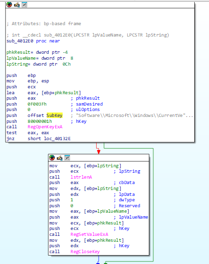
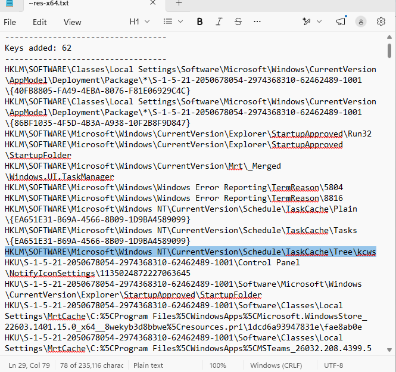
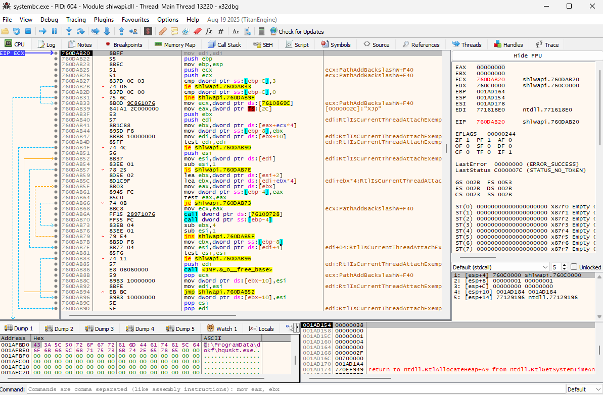

Scope and safety
I obtained the sample from MalwareBazaar and handled it only inside an isolated Windows VM. I used four complementary methods: basic static analysis, basic dynamic analysis, advanced static analysis, and advanced dynamic analysis. The goal was to validate behavior across tools instead of treating any single string, import, or antivirus label as proof by itself.
Sample triage
| SHA-256 | a2eaa3485a9efff93e652cb5e3fef2bddaa1e631d2abc258a66f3d3b7f09f3de |
|---|---|
| File profile | Win32 GUI executable, 873.08 KB, four normal-named PE sections |
| Packing check | UPX reported that the sample was not UPX-packed; this did not rule out other modification or obfuscation |
| Key imports | RegOpenKeyExA, RegSetValueExA, RegQueryValueExA, RegCloseKey, and VirtualAllocEx |
| Reputation | 59 of 72 VirusTotal engines flagged the hash at the time of analysis |
Strings64 and Resource Hacker also exposed a Windows Run key, a misleading svchost string, and NSIS installer resources. These findings formed hypotheses that I tested with disassembly and runtime data.
Persistence traced from string to code
IDA cross-references led from Software\Microsoft\Windows\CurrentVersion\Run to function sub_4012E0. That function opened the key with RegOpenKeyExA, wrote a value with RegSetValueExA, and closed the handle. This tied the static persistence indicator to an executable code path rather than relying on the string alone.

Runtime behavior and artifacts
The sample ran silently without a normal window. Regshot recorded a scheduled-task cache entry named kcws, an action pointing to C:\ProgramData\tmpjs\kcws.exe, and BAM execution records for other suspicious ProgramData executables.
Process Monitor independently captured creation of C:\ProgramData\evou and evou\jfvj.exe. The new executable was 894,032 bytes—the same size as the original sample—supporting the conclusion that it copied itself or dropped a closely related executable.

Debugger confirmation
I used the IDA and Procmon results to choose breakpoints instead of stepping through the program blindly. In x32dbg, I monitored registry APIs plus CreateDirectoryA/W, CreateFileA/W, WriteFile, and process-creation functions.
The CreateDirectoryA breakpoint exposed C:\ProgramData\dokf\ on the stack, followed by C:\ProgramData\dokf\hqusk.exe in memory. OllyDbg independently captured C:\ProgramData\glder\. The changing names across executions support dynamically generated folder and file names.

Network observations and limits
ApateDNS redirected lookups to 127.0.0.1, but the captured domains were attributable to normal Microsoft, Google, and Cloudflare background traffic. A Wireshark filter for new TCP SYN attempts also returned no packets during the observation window. I recorded this as a limited negative result—not proof that the sample lacked network capability—because communication could depend on a trigger, delay, hard-coded IP, VM detection, or a later-stage dropped copy.
Response considerations
- Contain: disconnect the host and stop unknown processes executing from ProgramData.
- Hunt: inspect random-named ProgramData folders, Task Scheduler entries, BAM records, and the Windows Run key.
- Eradicate: remove confirmed artifacts, scan with current endpoint tooling, and reset affected credentials where appropriate.
- Recover: prefer reimaging from a known-good source when complete removal cannot be established.